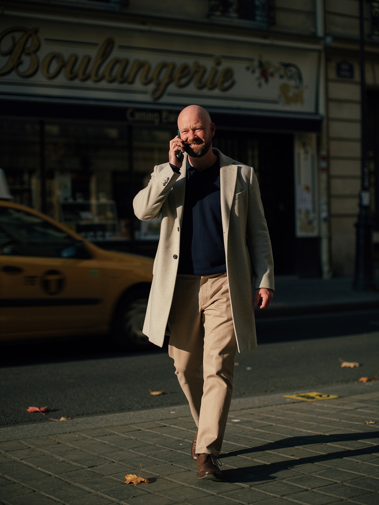

Les photos honteusement ratées (parce que faut être honnête)
Je vais pas te vendre du rêve. Pour 1 photo qui marche, j'en jette 4. Voici 3 ratés caractéristiques · ça te donne une idée du genre de pièges à éviter.
Raté 1 · L'IA a inventé un personnage qui n'est pas moi

Ce gars-là n'est pas moi. Je suis chauve, je porte pas de boucles d'oreilles, j'ai jamais eu cette coupe. Pourquoi ça arrive · quand le prompt est trop vague (genre "homme business sur un rooftop"), le modèle invente le personnage. Mes 4 selfies de référence pèsent moins fort que les milliers de photos LinkedIn corporate que le modèle a vues à l'entraînement.
Le fix qui a marché · forcer dans le prompt des ancres très précises sur l'identité · "chauve, barbe poivre et sel, structure du visage carré, yeux bleus". Et faire un mini-test de 1 photo avant le batch, pour voir si l'IA capte bien ma tête. Si elle me confond avec quelqu'un d'autre, j'ajuste avant de tirer 5 photos d'un coup.
Raté 2 · La pose figée "stock photo corporate 2018"

Là c'est un peu plus subtil · ça me ressemble vaguement (forme du crâne OK), mais c'est devenu une photo de banque d'images. Pose figée, costume beige stock, sourire de catalogue, lumière de pub immobilier. Si je mets ça en photo LinkedIn, mon réseau va se demander si j'ai pivoté en consultant Big4.
Pourquoi ça arrive · les modèles d'image ont une voix par défaut. Quand tu leur donnes pas de consignes très précises, ils tirent vers ce qu'ils ont le plus vu pendant leur entraînement · des photos de magazine éditorial, des photos corporate, du Hawkesworth-Kinfolk pour l'extérieur. Et c'est jamais ce qu'on veut quand on cherche du naturel.
Le fix qui a marché · j'ai créé un mode "iPhone naturel" par défaut. Le prompt force des choses comme "objectif 24mm, lumière mixte ambiante, légèrement décadré, pas de grain de pellicule, pas de composition éditoriale". Bilan · les photos ressemblent enfin à ce qu'on prendrait avec un iPhone moderne, pas à une couverture de magazine.
Raté 3 · Le street éditorial qui sent le shooting Vogue

À première vue, elle est belle. Lumière dorée, manteau crème, taxi jaune au second plan, geste cinématographique du téléphone à l'oreille · tu pourrais la croire payée 300 € à un photographe.
Pourquoi je la jette quand même · c'est exactement le piège du raté 2, version premium. Trop éditorial pour un usage perso. Si tu mets ça sur LinkedIn, ton réseau sent immédiatement le "shooting magazine" et la photo perd toute crédibilité d'authenticité. C'est joli mais ça ne te ressemble plus · ça ressemble à une publicité Hermès saison 2023. Le mouvement scripté (marche + téléphone) ajoute une couche de mise en scène qui pue le décor.
La leçon · les modèles d'image adorent les compositions de magazine. Plus c'est "joli", plus tu dois te méfier. Une photo qui te ressemble vraiment a souvent l'air moins remarquable qu'une photo de Vogue · et c'est précisément pour ça qu'elle marche.